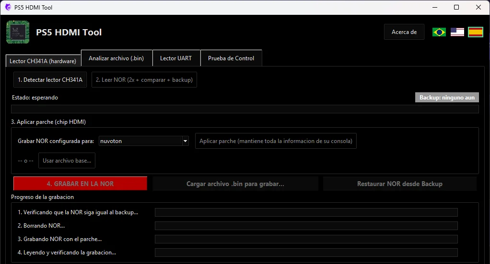

El Realtek RTD2175P sale de la placa
Antes que nada, haz el respaldo de la NOR. Después retira el chip HDMI original y limpia los pads. Aquí es donde la reparación solía trabarse: la pieza nueva cuesta R$ 1.700.

Lee, respalda y convierte la NOR del PS5 Slim con el lector CH341A.
La Interposer Tech MeoW pone el Nuvoton/Panasonic MN864739 en la placa que exige el Realtek RTD2175P. Flex transparente, regulador de 1,8 V ya soldado y ningún cable en la placa. La NOR la conviertes gratis con nuestro programa.

Modelo 3D hecho a partir del diseño real de la pieza. Arrastra para girar y ver las dos caras.
Algunas placas del PS5 Slim salen de fábrica con el chip HDMI Realtek RTD2175P. Cuando falla, la consola se queda sin video y el repuesto pesa demasiado en el presupuesto. Los precios están en reales brasileños (R$).
Con la mano de obra, la reparación con el Realtek llega a cerca de R$ 3.000 para el cliente, y mucha gente desiste. La interposer es lo que permite usar el chip más barato en esta placa. Valores de referencia: cambian según el mercado.

Y el Realtek suele llegar así: cortado de otra placa.
Desplázate por la página y sigue el cambio del chip HDMI en la placa. El modelo 3D sigue fotos de la placa y el diseño real de la interposer.
Antes que nada, haz el respaldo de la NOR. Después retira el chip HDMI original y limpia los pads. Aquí es donde la reparación solía trabarse: la pieza nueva cuesta R$ 1.700.
El flex transparente deja ver los pads de la placa por debajo: alineas mirando, sin adivinar. La cara de abajo tiene el pinout del RTD2175P, y los agujeritos permiten soldar por capilaridad con el cautín.

El chip Nuvoton o Panasonic, de R$ 80 en promedio, se suelda en la cara de arriba. La flecha y el triángulo de la serigrafía muestran la orientación y el pin 1.

El PMIC del Realtek, el cuadradito al lado del chip, entrega 3,3 V y 0,9 V. El Nuvoton usa 0,9 V y 1,8 V. La interposer toma los 3,3 V de un pin del Realtek y los lleva al pin 1 del regulador U1, ya soldado en la pieza. El pin 2 es GND, el pin 3 (EN) recibe los 0,9 V, y la salida de 1,8 V alimenta el chip nuevo. Sin sacar cables del PMIC del CXD y sin sobrecargar ese circuito.
La placa solo se comunica con el chip que indica la NOR. El programa, gratis, modifica la NOR con el lector CH341A para que el PS5 reconozca el chip nuevo. Graba, enciende y el video vuelve.

Una placa adaptadora flexible hecha para simplificar la reparación en el banco: el técnico suelda la pieza en la placa, suelda el chip encima y listo.
Se ve el otro lado durante el montaje. Alinear los pads de la interposer con los de la placa es mucho más fácil.
El U1 es un TI TLV71318 en SOT-23-5. Aprovecha los 3,3 V que ya existen en el punto del Realtek y entrega los 1,8 V del MN864739.
Los 1,8 V no salen de otro punto de la placa. Una sobrecarga en la sección de video queda contenida en la propia pieza.
El pin EN del regulador va en la pista de 0,9 V: los 1,8 V solo suben cuando los 0,9 V ya están presentes.
Los capacitores C1 a C7 ya vienen en la pieza. Soldar y seguir.
Abajo, el pinout del Realtek RTD2175P. Arriba, el del Nuvoton/Panasonic MN864739. Sin remapear pista por pista.
Triángulo en las dos caras y flecha para el chip nuevo, para reducir el riesgo de montarlo al revés.

Las tres formas de devolver el video a una placa que exige el RTD2175P.
| Qué cambia | Interposer Tech MeoW | Interposer con cables | Realtek nuevo |
|---|---|---|---|
| Chip usado | MN864739 | MN864739 | RTD2175P |
| Costo del chip | R$ 80 en promedio | R$ 80 en promedio | Cerca de R$ 1.700 |
| Cables en la placa | No | Sí | No |
| De dónde salen los 1,8 V | Regulador U1, en la propia pieza | Otro punto de la placa, como el PMIC del CXD | No se usa: el Realtek pide 3,3 V |
| Sobrecarga en la sección de video | Queda contenida en la pieza | Puede llegar al punto de donde sale el cable | Como en la placa original |
| Modificar la NOR | Sí, gratis con PS5 HDMI Tool | Sí | No hace falta |
La interposer resuelve la parte física. La parte de la NOR la hace nuestro programa, gratuito y de código abierto, hecho para el banco de trabajo.
Antes de grabar la placa de un cliente: revisa en el registro si el checksum de la conversión salió como resuelto. Si el programa avisa que no se resolvió, úsalo solo en una placa de banco.
El resumen del proceso. El paso a paso completo, con fotos y la ubicación del chip HDMI, está en la guía.
Con el CH341A, lee la NOR antes de acercar el cautín.
En el programa, elige nuvoton y aplica el parche para generar el archivo. Todavía no grabes.
Con flux y aire caliente, retira el chip y limpia los pads.
Pasta de 183 °C, alinea el pin 1 mirando a través del flex y haz la refusión.
En la cara de arriba, respetando la flecha de la serigrafía.
Lupa o microscopio y multímetro, antes de energizar.
Graba el archivo convertido, enciende y prueba el video.
 Programador CH341A
Programador CH341A Estación de aire caliente
Estación de aire caliente Cautín de precisión
Cautín de precisión Flux para soldar
Flux para soldar Pasta para soldar 183 °C
Pasta para soldar 183 °CPara técnicos. Exige experiencia en microsoldadura SMD/QFN y en grabación de NOR SPI. Hecho sin preparación, puede causar la pérdida total de la placa madre, y la modificación anula la garantía de fábrica de la consola.
Venta en Mercado Livre y Shopee (Brasil).
Sin registro y sin instalación.
Es una placa adaptadora delgada que va entre la placa madre y el chip HDMI. La Interposer Tech MeoW se suelda en los pads del Realtek RTD2175P por la cara de abajo y recibe el Nuvoton/Panasonic MN864739 en la cara de arriba.
Revisa la marca del chip entre la APU y el conector HDMI: debe decir RTD2175P. No confíes solo en la posición, sobre todo en una placa que ya fue retrabajada. PS5 HDMI Tool también muestra el chip HDMI configurado en la NOR.
La pieza y el programa se hicieron para placas de PS5 Slim que usan el chip HDMI Realtek RTD2175P.
Sí. La placa que sale de fábrica con Realtek solo se comunica con el Realtek. PS5 HDMI Tool modifica la NOR con el lector CH341A para que la consola reconozca el Nuvoton o el Panasonic.
Sí. Los dos son el mismo MN864739, vendido con las dos marcas en el mercado de repuestos.
Como referencia, en Brasil el Realtek RTD2175P cuesta cerca de R$ 1.700 solo la pieza, y el MN864739 cerca de R$ 80 en promedio. Los precios cambian según el mercado. El precio de la interposer está en nuestras tiendas de Mercado Livre y Shopee (Brasil).
No. El regulador U1, ya soldado en la pieza, aprovecha los 3,3 V del punto del Realtek y entrega los 1,8 V que necesita el MN864739.
Lector CH341A, estación de aire caliente, cautín de precisión, flux, pasta para soldar de baja temperatura, multímetro y microscopio o lupa.
No lo recomendamos. El servicio es para técnicos con experiencia en microsoldadura y grabación de NOR. Hecho sin preparación, puede causar la pérdida total de la placa madre.
Si la consola enciende normalmente, sospecha primero de la soldadura: pin frío, puente o chip desplazado. Si se queda en la pantalla azul de verificación, confirma que el programa mostró el checksum de la conversión como resuelto.
Compra la interposer, descarga el programa gratis y termina la reparación. ¿Tienes un taller, una tienda o un canal? Habla con nosotros sobre alianzas.
Prueba y calibra el control del PS5: botones, palancas, drift, gatillos y vibración. Gratis en el navegador de la computadora. En el celular, la app para Android tiene 2 días gratis.
Control PS-5 es una app gratis para Nintendo Switch desbloqueado: conecta el DualSense por Bluetooth, sin adaptador, con gatillos adaptativos, barra de luz y perfil por juego.